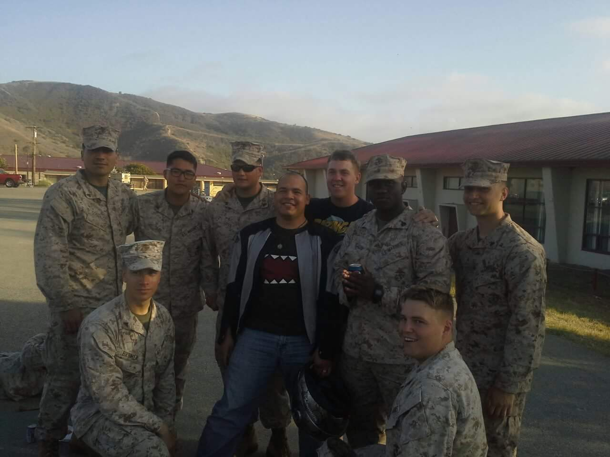
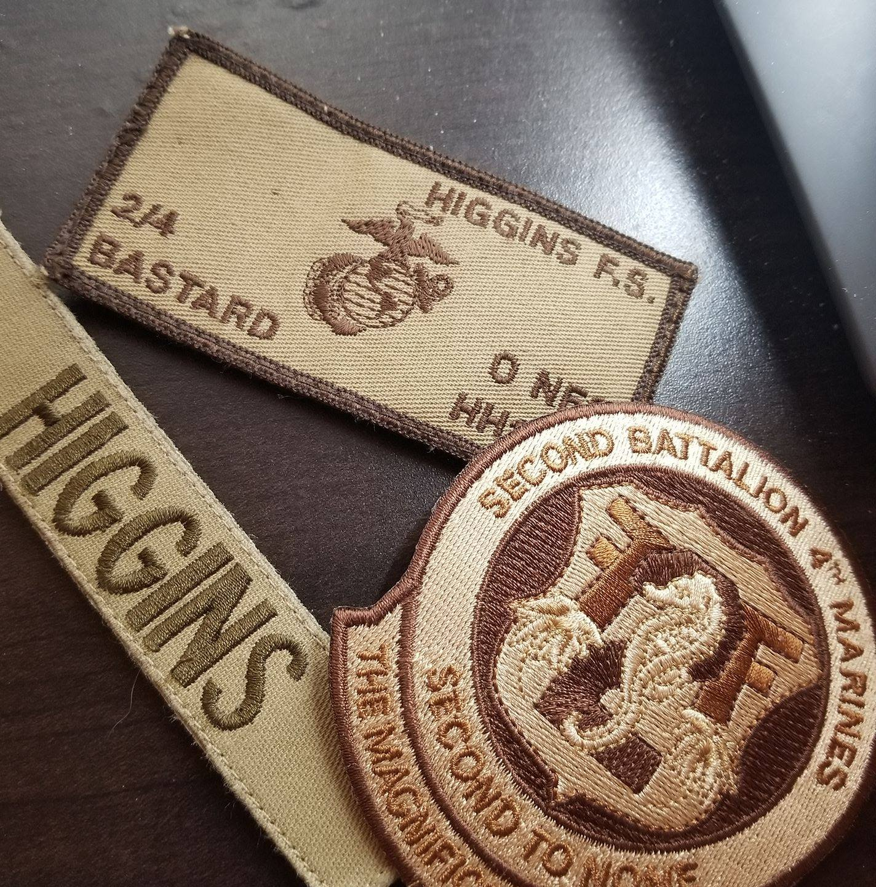
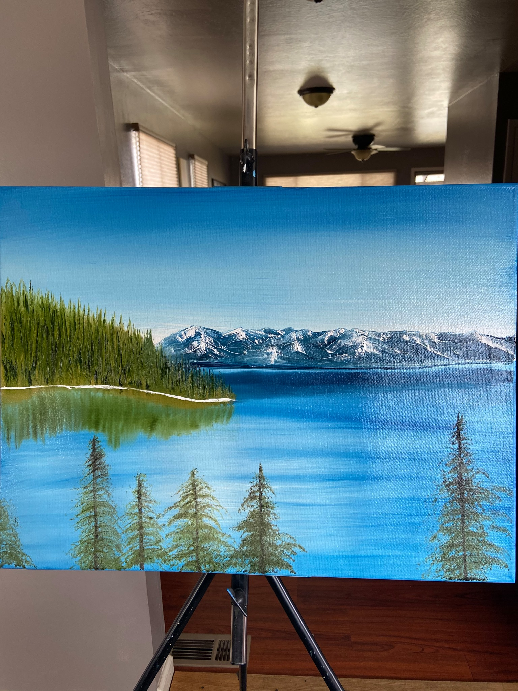
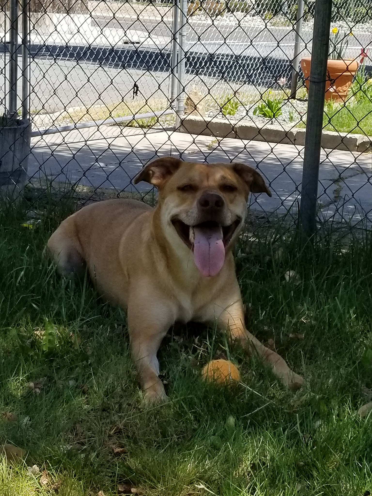

Name: Shane Higgins
Location: Reno, Nevada
Profession: IT Technician, Web Development Student
About Me
After graduating high school in the summer of 2009, I joined the United States Marine Corps where I served as a data network specialist. This jump started my career into technology, where I learned building and managing servers, networking, information security, and much more.
After leaving the Marines in 2014, I briefly attended Academy of Arts University where I studied Game Design, mainly working with JavaScript in the Unity engine, as well as 3D modeling, story writing, and some art classes. I stopped attending shortly after I started working as a systems support technician, where I continued my previous career in technology, working with back end systems and supporting users.


As much as I loved my job, I felt like I wasn't being my best self. There was a creative side of me that I wanted to tap into, however, working in IT, you don't get many oppurtunities to be creative. Every now and then I'd get to do some coding, or build a layout with HTML to make it easier for our technicians and users to read and understand what the details were on tickets that were emailed to them. I loved that I was able to use logical thinking while also creatively playing with ways to make everything look pleasing to the eye.
It wasn't until 2021 that I decided to take that first step, and truly make a change in my life. As scary as it can be to do a career change, I felt like it was necessary in order to improve my quality of life as well as leave my mark on the internet, and express myself creatively.
I started with Codecademy, learning front-end development, building websites and learning HTML & CSS. A few months after that, I applied to Flatiron School, where I could really commit to my career change for once, take control of my life and see how far I can really go.


Fun Facts
- - I was born in Oahu, Hawaii
- - In my time in the military, I traveled to Afghanistan, Australia, Okinawa, and Hong Kong
- - I have 3 dogs
- - I enjoy occasionaly painting or drawing